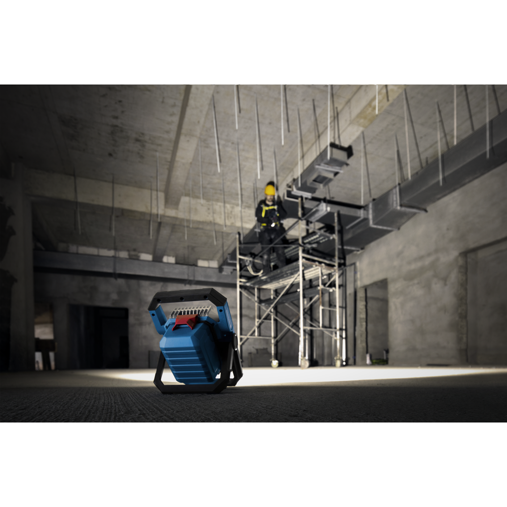
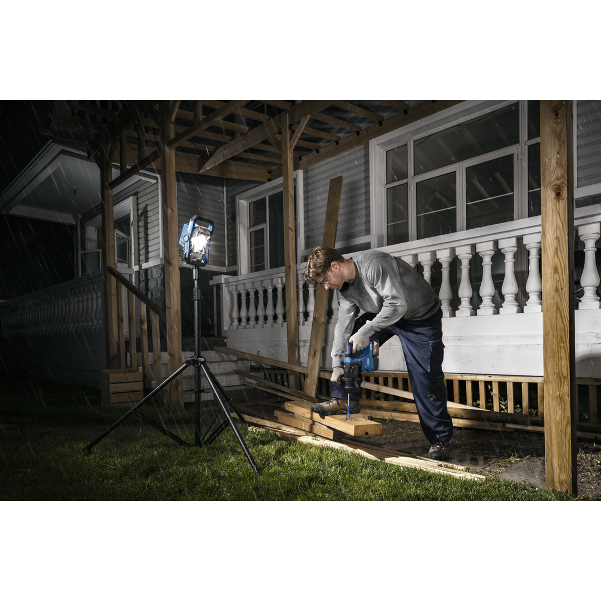
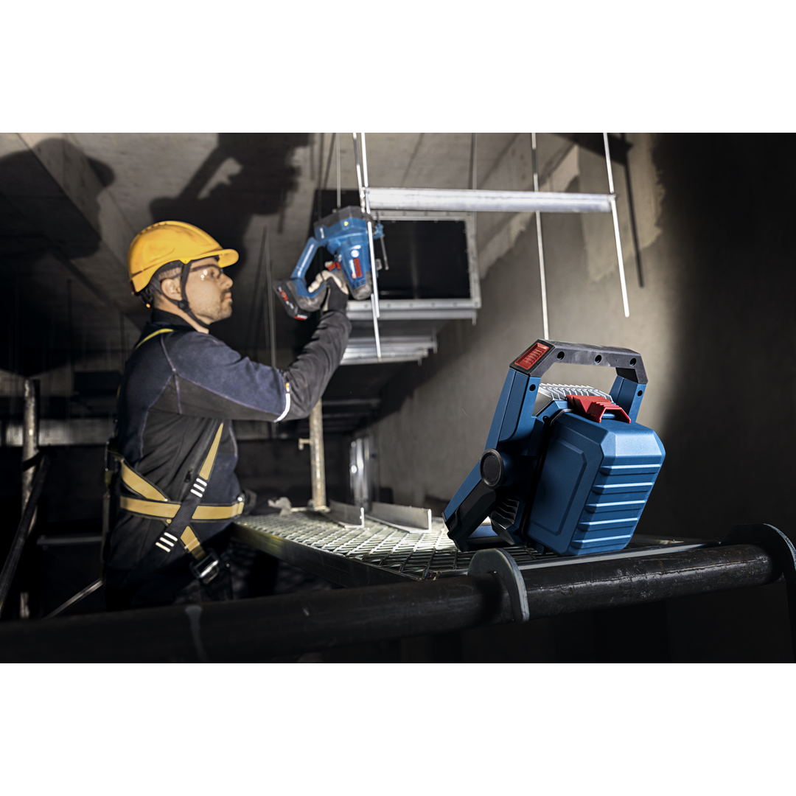
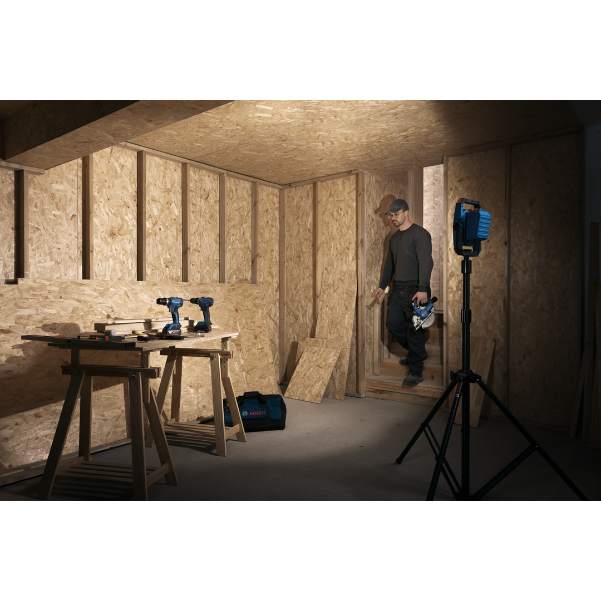
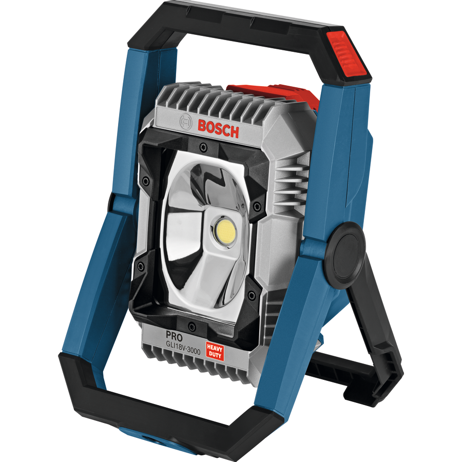

06014A81L0





| Tool dimensions (width) |
156 mm |
| Tool dimensions (length) |
187 mm |
| Tool dimensions (height) |
292 mm |
| Battery voltage, works with |
18.0 V |
Exceptional 3000-lumen brightness with rugged design for any jobsite
The PRO GLI18V-3000 offers superior-performance with 3000 lumen brightness. This rugged flashlight comes with IP 64-rate protection protecting it from dust and water splashes. It is quick and easy to mount on a tripod, the floor, a work bench or any other surface for hands-free lighting in fixed positions. And there are three brightness modes to choose from: 3000 lm, 2000 lm and 1000 lm.
This flashlight is designed to provide exceptional illumination, even in the most demanding work environments. It is compatible with all Bosch Professional 18 V batteries. Also compatible with AMPShare, the multi-brand batter y alliance. *Battery cover does not fully close when using EXPERT 12.0Ah battery.